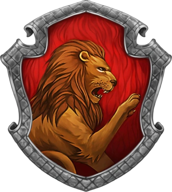
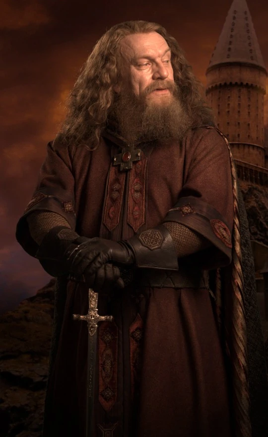

A Grifinória, fundada por Godrico Gryffindor, é uma das quatro casas da Escola de Magia e Bruxaria de Hogwarts. Ao estabelecê-la, Godrico instruiu o Chapéu Seletor a classificar estudantes que obtivessem características as quais ele mais valorizava, como a coragem, o cavalheirismo e a determinação[4]. Suas cores são o escarlate e o ouro[2] e seu animal emblemático é um leão. Sir Nicholas de Mimsy-Porpington, também conhecido como "Nick Quase Sem Cabeça" é o fantasma patrono da casa
Godrico Gryffindor
Godrico Gryffindor foi um bruxo inglês nascido por volta de 976 e um dos quatro fundadores da Escola de Magia e Bruxaria de Hogwarts. Ele classificava seus alunos baseando-se em sua coragem, determinação e ousadia. Em sua homenagem, o local o qual nasceu, foi reconhecido como Godric's Hollow. O retrato de Gryffindor ainda permanece no castelo de Hogwarts.
